比较仿生呼吸、仿生心跳、机械振动与无振动对照四种桌面触觉反馈条件，对急性认知压力后焦虑与情绪状态恢复的影响。
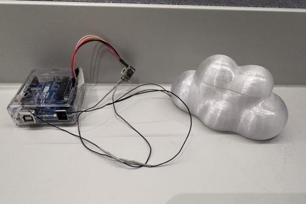
久坐办公 / 学习的知识工作者经常经历急性认知压力与状态焦虑，但现有的数字压力干预大多依赖视觉或听觉通道——恰恰是一个已经紧张、注意力被占用的用户最稀缺的资源。触觉提供了一条可以与中枢注意力并行工作、而非争夺注意力的通道，但传统触觉设备大多采用高频机械警报这类「话务式」信号，容易让人一惊而非平静下来。
更重要的是，已有文献大多只是把「某一种仿生节律」与「非仿生对照」相比较，很少在同一项研究中直接比较呼吸节律与心跳节律这两条不同的生理夹带（entrainment）路径——仿生本身是否足够带来平静效果，还是渲染的具体节律才是关键？这正是本项目要回答的问题。
硬件架构由 Arduino UNO（主控）、Adafruit DRV2605L 触觉驱动芯片、以及一枚线性谐振致动器（LRA）组成。相比传统偏心转子马达，LRA 能实现亚毫秒级响应与解耦的精确振幅控制，是渲染平滑连续波形的前提。四种条件的渲染参数完全来自最终部署的固件：
| 条件 | 驱动模式 | 频率 / 重复 | 渲染特征 |
|---|---|---|---|
| A · 仿生呼吸 | 实时波形流 | 12 BPM（≈5.2 s/循环） | Smoothstep 平滑曲线，强度 30–80，吸气 2s / 呼气 2s |
| B · 仿生心跳 | 实时波形流 | 72 BPM（≈833 ms/循环） | S1（收缩期）峰值 80，S2（舒张期）峰值 65，线性步进 |
| C · 机械振动对照 | 内置库触发 | 约 1 Hz 重复 | 固定波形、无连续调制，类似传统提醒振动 |
| D · 无振动对照 | 实时波形流 | N/A | 全程强度恒为 0，仅保留被动接触 |
电子部分确定后，外壳经历了三轮物理迭代：最初用小型扬声器驱动的方案只能听到声音、几乎摸不到振动，因此转向专用触觉驱动方案；随后 3D 打印了 7 版「猫形 / 云朵形」× 4 种材质（TPU 95A / PETG 15% 填充 / PETG 实心 / TPU 85A）的对比原型，综合振动传导效果与人体工学（云朵形状左右对称、无方向性，避免引入利手偏差）选定 PETG 15% 填充的云朵造型；最后把马达从底部槽腔重新设计到贴近手掌接触面的上叶腔体内，显著提升振动传导效率。最终外壳尺寸 110×85×42 mm，半透明 PETG 材质。
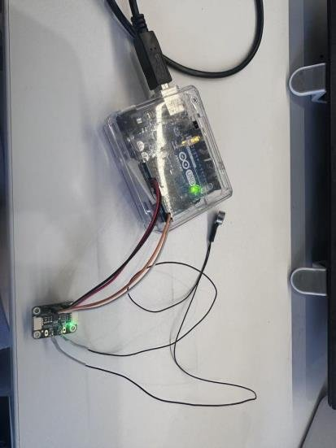
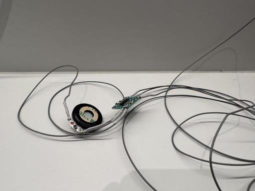
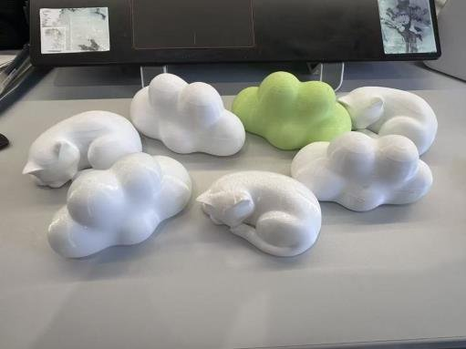
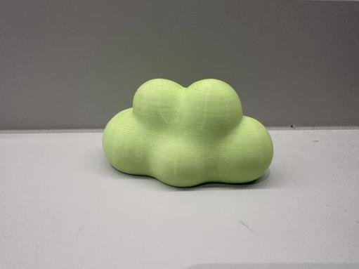
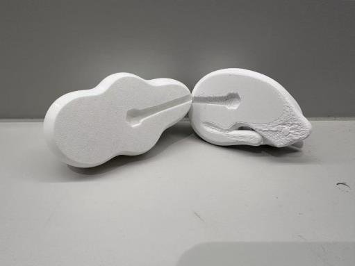
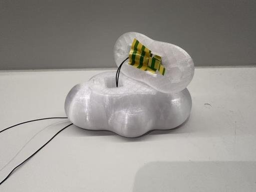
采用被试内重复测量设计：每位参与者在单次约 50–60 分钟的实验中依次体验全部四种条件，每种条件前用一段 90 秒的自适应 Stroop 色词任务诱发急性压力（正确率越高、下一次反应时限越短，形成自我校准的持续压力），随后进行 5 分钟触觉暴露与 3 分钟静息洗脱，条件顺序按 4×4 拉丁方进行部分平衡的顺序控制。参与者对条件身份单盲（只知道字母代号 A/B/C/D）。
主要结局指标为 STAI-6 状态焦虑量表、简化版 SAM 情绪效价 / 唤醒量表，以及一份 8 题的条件体验问卷；因样本量小（N = 9）且量表数据非正态，全部采用非参数检验：Friedman 检验配合 Kendall's W 效应量，事后两两比较使用精确 Wilcoxon 符号秩检验并以 Holm 法校正多重比较。
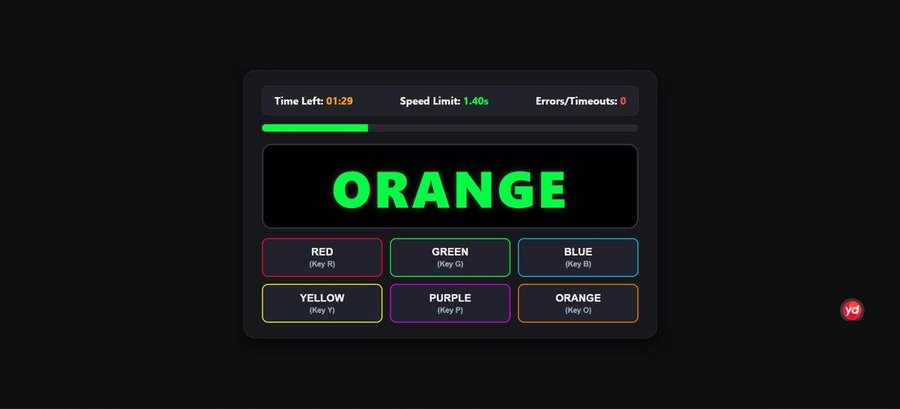
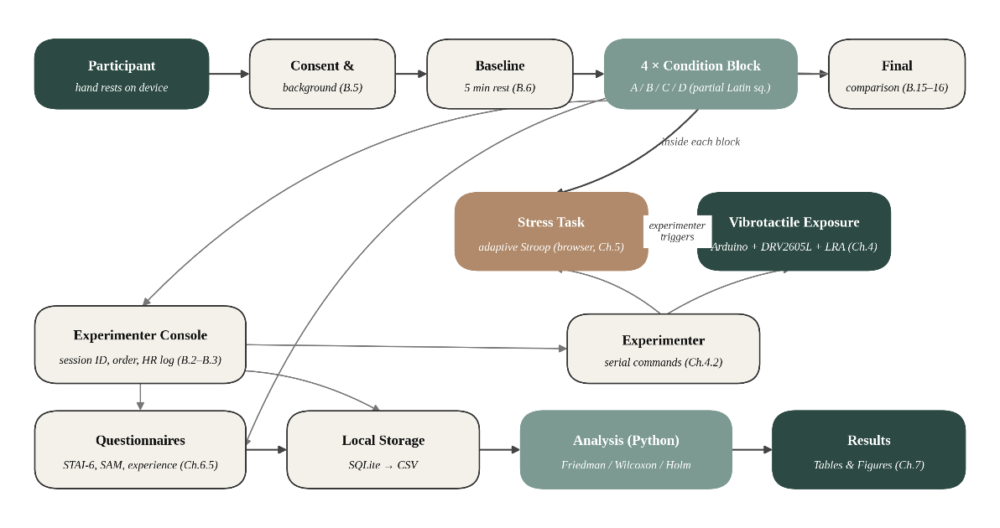
9 名参与者完成全部四种条件（36 组条件观测）。压力操纵检验确认 90 秒的自适应 Stroop 任务确实显著提升了焦虑与唤醒水平。在三项主要结局指标上，仿生呼吸（A）在全部维度上都表现最优：
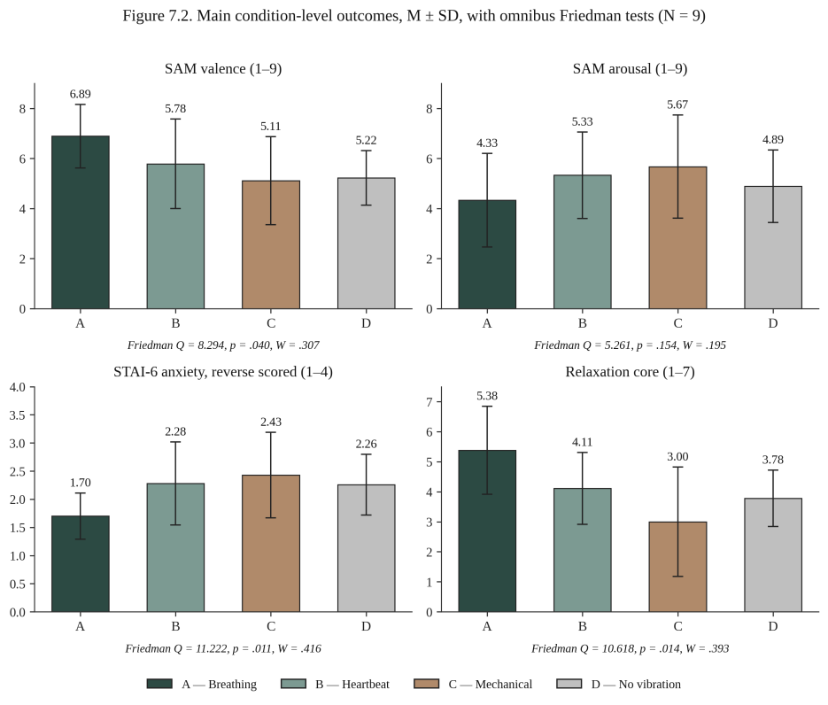
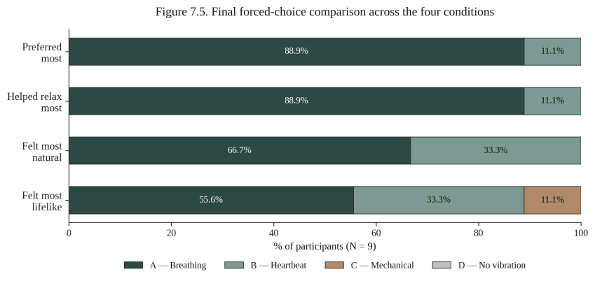
结果部分支持假设 H1：仿生条件整体优于非仿生 / 无振动条件，但两种仿生条件并不等效——仿生呼吸持续优于仿生心跳，说明「仿生」本身并不足够，被渲染的具体节律才是关键。这与呼吸节律夹带（respiratory entrainment）机制一致：用户可以主动把自己的呼吸同步到一个较慢的外部节奏上，而心跳节律是被动施加的、无法被用户主动放慢，因此更容易被感知为「清晰但略显急促」而非真正的平静。机械振动条件（C）在放松度、愉悦度与最终偏好上全面垫底，与 C 触觉传入通路理论一致——固定波形的重复触发缺乏平滑调制，更接近具有警觉性的判别式触觉信号，而非能激活 C 触觉传入的抚触式信号。
研究的主要局限包括样本量较小（N = 9，所有统计推断为探索性而非验证性）、拉丁方顺序未完全均衡分配、连续生理指标（HRV / EDA）未能可靠采集等，后续工作计划扩大样本至 12–16 人并引入连续生理测量进行验证性重复实验。
这项研究表明，即使是一个被动搁置在桌面上的小型触觉装置，也能在不占用视觉注意力的前提下，显著改变急性压力后的自我报告焦虑与情绪效价——而渲染出的具体节律，而非「仿生」这一属性本身，才是决定平静效果的关键变量。仿生呼吸在全部主要指标上的稳定优势，使其成为未来桌面情绪调节硬件的一个可信默认选项。